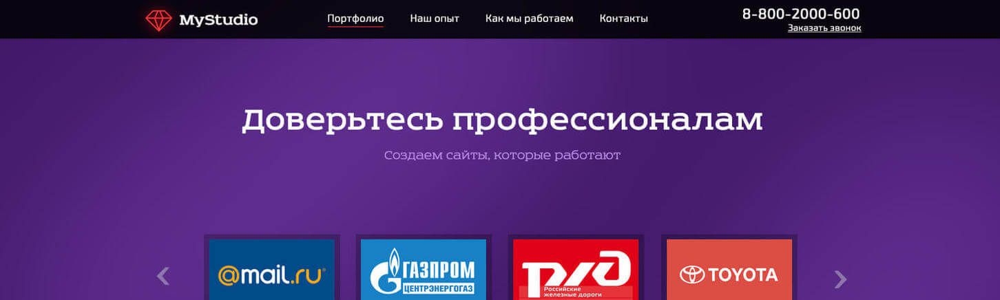

Курсы
Уроки веб-дизайна - Страница 2
Обзор моей рабочей среды Adobe Photoshop для веб-дизайна (Настройки, InVision Craft, FontAwesomePS)
Создание дизайна сайта в Adobe Photoshop (Speed Art)
Иконки для веб-дизайна (Обработка: Inkscape + Photoshop)
Быстрое создание скетча в wireframe|cc
YouTube видео в качестве фона на сайте

Создание дизайна Landing Page для студии разработки сайтов (Урок 2)
Создание дизайна Landing Page для студии разработки сайтов (Урок 1)
Визуальная иерархия в интерфейсах
Создание иллюстрации для сайта в стиле Flat (Урок)
7 простых советов по созданию шапки продающего сайта
Назад
2 из 2
Вперед